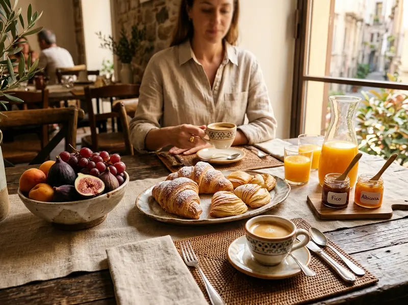

Pasticceria calda
I lievitati della tradizione
Sfogliatelle ricce croccanti e frolle morbide alla semola, babà al rum, torta caprese alle mandorle e cornetti a lenta lievitazione farciti al limone di Sorrento.
01 Inclusa in ogni tariffa · 8:00-10:30
Ogni mattina ritiriamo i lievitati appena sfornati dai laboratori storici del Vomero e prepariamo il caffè al momento, senza alcun costo aggiuntivo sul soggiorno.
01 La selezione quotidiana
Pasticceria calda
Sfogliatelle ricce croccanti e frolle morbide alla semola, babà al rum, torta caprese alle mandorle e cornetti a lenta lievitazione farciti al limone di Sorrento.

Torrefazione locale
Caffè espresso napoletano estratto al momento, preparazione tradizionale con la cuccumella su richiesta, cappuccini cremosi e tè biologici in foglia.

Salato e biologico
Spremute fresche di arance rosse, frutta di stagione, pane a lievitazione naturale con confetture di fichi e albicocche vesuviane, fiordilatte e ricottine.

02 Filiera corta del quartiere
Abbiamo scelto di non offrire prodotti confezionati: ogni mattina alle sette ritiriamo personalmente i dolci e il pane dai migliori artigiani tra Piazza Vanvitelli e Via Scarlatti.
Puoi gustare la colazione nel salone comune inondato dalla luce del mattino oppure richiederla direttamente nella quiete della tua camera o della Suite Vomero senza alcun supplemento.
03 Servizio su misura
Adattiamo la colazione ai tuoi ritmi di viaggio e alle tue esigenze alimentari.